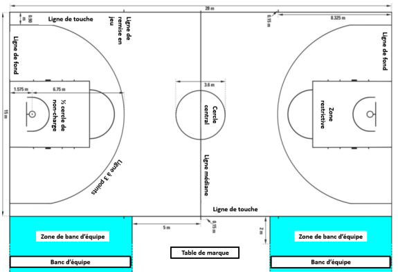

The basic rules for a 5 vs 5 basketball match: there are 2 teams, each with a coach and the option to
have an assistant coach.
They each have 5 players on the court, and teams are allowed a maximum of 7 substitutions.
For a match to begin, there needs to be a minimum of 1 referee and a maximum of 3 referees: Crew
Chief, 2nd referee, and 3rd referee, as well as a minimum of 2 people at the
scorer's table who are
the scorer and the timekeeper, and a maximum of 8 people. Additionally, there is the shot clock
operator, the assistant scorer, the commissioner, and 3 statisticians.
And mainly, you need a ball. A size 7 ball for men and a size 6 ball for women.
The court is limited with red lines forming a rectangle measuring
13 to 15 meters wide and 22 to 28 meters in length generally.
Basketball court dimensions.

The scorer's table and substitute seats.

There are 2 baskets that measure 3.05m in height. A basket is worth 1, 2, or 3 points. 1 point
for a free throw made, which is the half-circle above the restricted zone that is
4.20m from the basket, 3 points behind the solid line at 6.75m from the basket, and the rest at
2 points (see the images).
2-point and 3-point zones.

A match lasts 4 periods of 10' and 5' in overtime in case of a tie until they are separated.
FIBA rules are applied everywhere except in the United States.
For example, in the NBA, it's 4 periods of 12'.
Watch this video for basic FIBA rules:
Official FIBA rules:
2024 Official Basketball Rules
FIBA Interpretations document:
Official FIBA Interpretations for the 2024-2025 Season